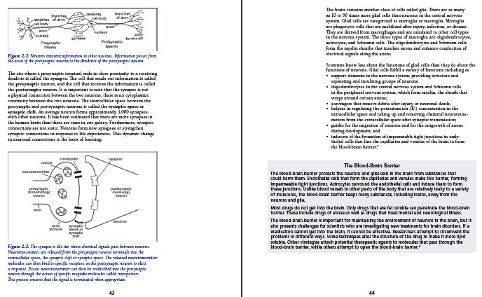

要約
主要なコンテンツから補助的なコンテンツを分離することで、支援技術のユーザーはより容易に主要な文章を追いかけられるようになります。
テクニック
- リスト、表、図、コードサンプルなどの複雑な構造はすべて、適切な構造要素を使用して正しくタグ付けします。[[WCAG-1.3.1]]
-
section要素は主要なコンテンツに、aside要素は補助的なコンテンツに、それぞれ指定します。[[WCAG-1.3.1]] - すべての要素に適切なセマンティクスが適用され、その用途が明確であるようにします。[[WCAG-1.3.1]]
- マークアップ内のコンテンツの順序は、自然な読み順を正確に反映しているようにします。[[WCAG-1.3.2]]
- JavaScriptを有効にしなくてもドキュメントを最初から最後まで読めるようにします。[[WCAG-1.3.2]]
例
次の教科書の抜粋例において、周囲に配置されている画像とサイドバーを区別できる目の見えるユーザーにとっては、視覚的な手がかりから文章の順番は明らかです。
次のマークアップ例のように、画像をオフセットするfigureタグとサイドバーのasideを使用すると、論理的な読み順が成立します。
<div epub:type="pagebreak">43</div>
<figure>
<img src="img01.jpg" alt="…"/>
<figcaption>
Figure 2.2: Neurons transmit information to
other neurons. Information passes from the
axon of the presynaptic neuron to the
dendrites of the postsynaptic neuron.
</figcaption>
</figure>
<p>
The site where a presynaptic terminal ends in
close proximity to a receiving dendrite is
called the <dfn>synapse</dfn>.
The cell that sends out information is called the
<dfn>presynaptic</dfn> neuron, and the cell
that receives the information is called the
<dfn>postsynaptic</dfn> neuron. It is
important to note that the synapse is not a
physical connection between the two
neurons; there is no cytoplasmic continuity
between the two neurons. The intercellular space
between the presynaptic and postsynaptic neurons
is called the <dfn>synaptic space</dfn> or
<dfn>synaptic cleft</dfn>. An average
neuron forms approximately 1,000 synapses with
other neurons. It has been estimated that there
are more synapses in the human brain than there
are stars in our galaxy. Furthermore, synaptic
connections are not static. Neurons form new
synapses or strengthen synaptic connections in
response to life experiences. This dynamic
change in neuronal connections is the basis of
learning.
</p>
<figure>
<img src="img02.png" alt="…"/>
<figcaption>
Figure 2.3: The synapse is the site where
chemical signals pass between neurons.
Neurotransmitters are released from the
presynaptic neuron terminals into the
extracellular space, the synaptic cleft or
synaptic space. The released neurotransmitter
molecules can then bind to specific receptors
on the postsynaptic neuron to elicit a
response. Excess neurotransmitter can then be
reabsorbed into the presynaptic neuron through
the action of specific reuptake molecules
called transporters. This process ensures that
the signal is terminated when appropriate.
</figcaption>
</figure>
<div role="doc-pagebreak">44</div>
<p>
The brain contains another class of cells called
glia. There are as many as 10 to 50 times more
glial cells than neurons in the central nervous
system. Glial cells are categorized as microglia
or macroglia. Microglia are phagocytic cells that
are mobilized after injury, infection, or
disease. They are derived from macrophages and
are unrelated to other cell types in the nervous
system. The three types of macroglia are
oligodendrocytes, astrocytes, and Schwann cells.
The oligodendrocytes and Schwann cells form the
myelin sheaths that insulate axons and enhance
conduction of electrical signals along the axons.
</p>
<p>
Scientists know less about the functions of glial
cells than they do about the functions of
neurons. Glial cells fulfill a variety of
functions including as
</p>
<ul>
<li>
support elements in the nervous system,
providing structure and separating and
insulating groups of neurons;
</li>
<li>
oligodendrocytes in the central nervous
system and Schwann cells in the peripheral
nervous system, which form myelin, the sheath
that wraps around certain axons;
</li>
<li>
scavengers that remove debris after injury
or neuronal death;
</li>
<li>
helpers in regulating the potassium ion
(K<sup>+</sup>) concentration in the
extracellular space and taking up and
removing chemical neurotransmitters from
the extracellular space after synaptic
transmission;
</li>
<li>
guides for the migration of neurons and for
the outgrowth of axons during development; and
</li>
<li>
inducers of the formation of impermeable tight
junctions in endothelial cells that line the
capillaries and venules of the brain to form
the blood-brain barrier.<a role="doc-noteref"
href="#fn03">3</a>
</li>
</ul>
<aside epub:type="sidebar">
<h3>The Blood-Brain Barrier</h3>
<p>
The blood-brain barrier protects the neurons
and glial cells in the brain from substances
that could harm them. Endothelial cells that
form the capillaries and venules make this
barrier, forming impermeable tight junctions.
</p>
<p>
Astrocytes surround the endothelial cells
and induce them to form these junctions.
Unlike blood vessels in other parts of the
body that are relatively leaky to a variety
of molecules, the blood-brain barrier keeps
many substances, including toxins, away from
the neurons and glia.
</p>
<p>
Most drugs do not get into the brain. Only
drugs that are fat soluble can penetrate the
blood-brain barrier. These include drugs of
abuse as well as drugs that treat mental
and neurological illness. The blood-brain
barrier is important for maintaining the
environment of neurons in the brain, but it
also presents challenges for scientists who
are investigating new treatments for brain
disorders. If a medication cannot get into
the brain, it cannot be effective.
Researchers attempt to circumvent the
problems in different ways. Some techniques
alter the structure of the drug to make it
more lipid soluble. Other strategies attach
potential therapeutic agents to molecules
that pass through the blood-brain barrier,
while others attempt to open the blood-brain
barrier.<a epub:type="noteref"
href="#fn04">4</a>
</p>
</aside>
よくある質問
- なぜ論理的な読み順が重要なのですか？
-
テキスト読み上げ（TTS）エンジンを使って読んでいる人が、あなたの出版物をどのように扱うかを考えてください。このような方はマークアップレベルをナビゲートしながら、構造から構造へと移動し、各ステップでレンダリングされた文章を聞いています。それが問題ないのならば、では次に、先ほど辿った構造に関する情報が無い場合を想像してみてください。次の段落に移動できるでしょうか。それとも突然脚注部分が音声で提示されるでしょうか。最後のセクションは終わったでしょうか、それともサイドバーに移動してしまったでしょうか。
構造とセマンティクスがなければ、構造から次の構造に簡単に移動することはできません。
divとしてマークされたサイドバーはどこで終わり、次の段落はどこに続くのでしょうか。これらの疑問をユーザー自身が解決しなければならず、ユーザーは一般的なマークアップによる理解しにくい読み順を組み合わせるために、出版物を手動でナビゲートするはめになります。これは、セマンティック的に無意味なマークアップは、読書体験を台無しにし、全く不可能にしてしまう理由でもあります。 - セマンティック マークアップはどのようにして読みやすさを向上させるのでしょうか？
通常、アクセシブルなユーザーエージェントにはユーザーが読み飛ばす要素を選択する設定があります。セマンティック マークアップが行われていると、必須でないコンテンツが識別でき、読み飛ばしが容易になります。補助的なコンテンツがあった場合、ユーザーはレンダリングするかどうかを選択でき、必要に応じて負担なく移動したり回避できます。
解説
出版物には通常、ユーザーが最初から最後まで辿ることが期待されている主文の流れがあります。この主文を中断することなくナビゲートできることは、出版物をアクセシブルにする上で重要な要素です。
時には、文章とマークアップでの表現の間に違いが出ないこともあります。たとえば、小説はセクション、見出し、段落のみで構成され、それらはすべて順番にマークアップされ、順番に読むことができます。ただし、ほとんどの出版物はレイアウトがある程度複雑であるため、このようなケースは一般的とは言えません。
多くの場合、出版物には、脚注、文末脚注、参考文献、補足記事、表、図、グラフ、コードサンプル、警告、アラートなどの補足情報が少なくともいくつか含まれます。このような情報は本文のコンテンツ内に散在するため、そのマークアップも必然的にコンテンツ ドキュメント内に散在することになります（たとえば、サイドバーをセクション内の二つの段落の間に置き、その周囲にテキストを回し込む等）。このコンテンツが明確にマークアップされていないため補助的な情報として識別されない場合、ユーザーがマークアップレベルに応じてナビゲートする際には、ユーザーエージェントは補助的なコンテンツを再生してしまい、主文の流れが中断されてしまいます。
この問題はHTML5以前は特に深刻でした。汎用のdivタグを使用して補助的な素材をグループ化していたため、その目的を確実に区別する方法がありませんでした。その結果、ユーザーは読み続けるために、そのコンテンツの終了位置を手動で特定しなければなりませんでした。
視覚障害者にとってアクセシブルにするには、論理的な読み順で、主要な文章を辿れるように、コンテンツは補助的な素材を除外した論理的な道順でマークアップされている必要があります。ユーザーが読み上げを中断されたくない場合は、リッチマークアップを使用すれば、補助的な素材をテキスト読み上げ再生や点字ディスプレイのレンダリングから自動的に除外できます。
関連リンク
- HTML — ARIA ロール属性